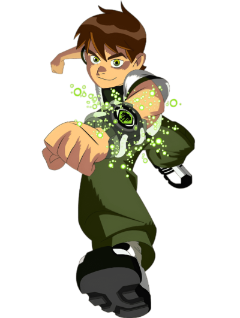
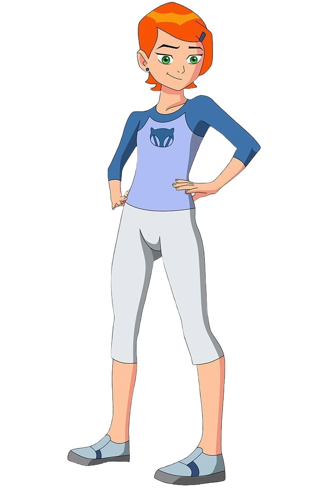
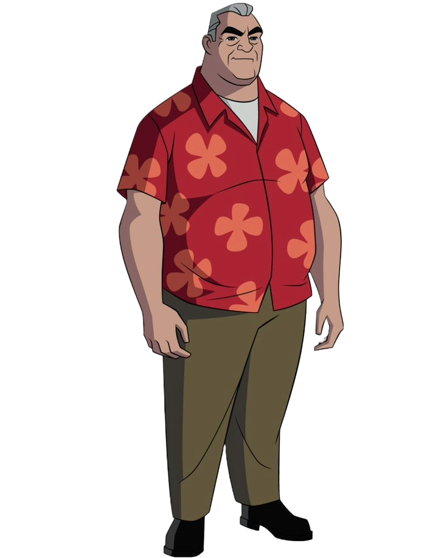
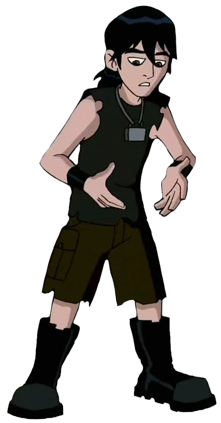

Personagens principais
Conheça o Ben
Conheça a gwen
Conheça o Vovo Max
Conheça o Kevin
Benjamin Kirby Tenyson

Gwendollyn Tennyson (Gwen)

Maxwell Tennyson (Max)

Kevin Ethan Levin

Volte para a pagina inicial.